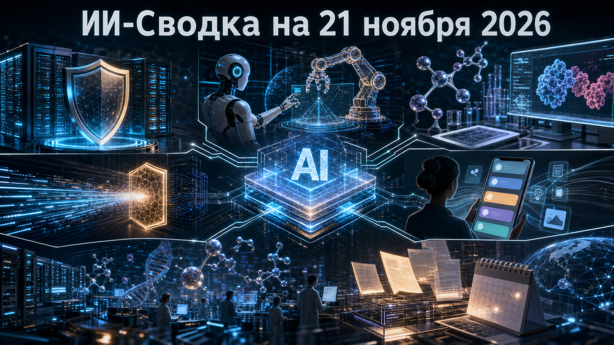

Новостей сегодня меньше, чем обычно
Главная линия выпуска — перенос ИИ из отдельных моделей в управляемые контуры: безопасные корпоративные развёртывания, внешние агентные интеграции и специализированные исследовательские задачи. На этом фоне крупная сделка Palo Alto Networks показывает, что кибербезопасность всё активнее связывается с адаптацией и эксплуатацией открытых моделей.
Одновременно Яндекс расширяет роль Алисы AI и Яндекс 360 в пользовательских и агентных сценариях, а OpenAI публикует материалы о применении ИИ в поиске лекарственных кандидатов и защите от враждебной дистилляции.
Palo Alto Networks объявила о планах приобрести Applied Compute за $4,5 млрд. По данным IT Pro, разработчик должен усилить направление гибридной ИИ-безопасности: безопасное обучение, адаптацию и развёртывание открытых моделей наряду с закрытыми системами в облачных и суверенных контурах.
Сделка ещё требует закрытия, поэтому её продуктовый эффект нельзя считать реализованным. Однако заявленное назначение важно для компаний, которые хотят использовать open-weight модели на собственных данных, но нуждаются в контроле доступа, настройке моделей и защите рабочих процессов.
NVIDIA в материале Into the Omniverse описала, как разработчики сочетают агентов ИИ с библиотеками Omniverse для создания симуляционных приложений, проверки физического поведения и улучшения проектов.
Это не объявление новой модели или отдельного коммерческого продукта, а демонстрация практического направления: агент ИИ становится интерфейсом к симуляции. Для робототехники, промышленной автоматизации и инженерных команд ценность такого подхода зависит от качества исходных данных, достоверности физической модели и обязательной проверки результатов человеком.
OpenAI опубликовала материал Can AI help scientists identify promising drug candidates?, посвящённый MedChemBench. Из названия и публикации следует, что компания рассматривает оценку способности ИИ помогать учёным выявлять перспективные кандидаты для разработки лекарств.
Появление специализированных оценок важно само по себе: для научного ИИ недостаточно общего качества диалога или программирования. Практическая значимость будет зависеть от методологии бенчмарка, воспроизводимости результатов и того, как модельные предложения проходят дальнейшую лабораторную и клиническую проверку.
OpenAI выпустила публикацию Combatting adversarial distillation, посвящённую противодействию враждебной дистилляции. Речь идёт о риске, при котором возможности модели пытаются воспроизвести через систематическое взаимодействие с ней и сбор ответов.
Для разработчиков frontier-моделей это вопрос не только защиты интеллектуальной собственности, но и управления доступом к наиболее сильным возможностям. При этом защитные меры должны сохранять легитимный доступ пользователей и исследователей, не превращая обычную работу с API в избыточно ограниченный процесс.
Яндекс сообщил, что в приложении «Яндекс — с Алисой AI» пользователям будут показываться ИИ-подсказки по интересам. Анонс опубликован в материале Яндекса от 20 ноября.
Это развитие делает персонализацию более заметной частью потребительского интерфейса. Поскольку в доступном анонсе не раскрыты механизм рекомендаций, набор учитываемых сигналов и пользовательские настройки, оценивать точность, прозрачность и влияние на приватность пока преждевременно.
Яндекс объявил, что Яндекс 360 открыл доступ к своим сервисам внешним агентам ИИ. Сообщение опубликовано на странице Яндекса 20 ноября.
Сюжет важен как шаг к агентной совместимости рабочих сервисов: агент ИИ потенциально может стать не только собеседником, но и участником процессов вокруг почты, документов, календарей и других корпоративных инструментов. В таких интеграциях решающими остаются явные права доступа, журналирование действий и подтверждение операций с существенными последствиями.